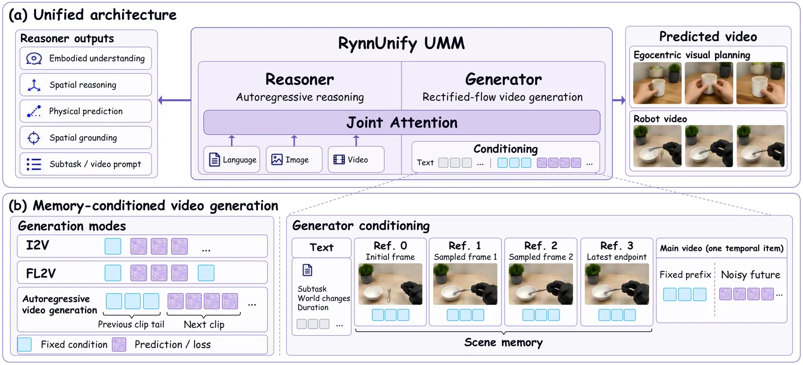
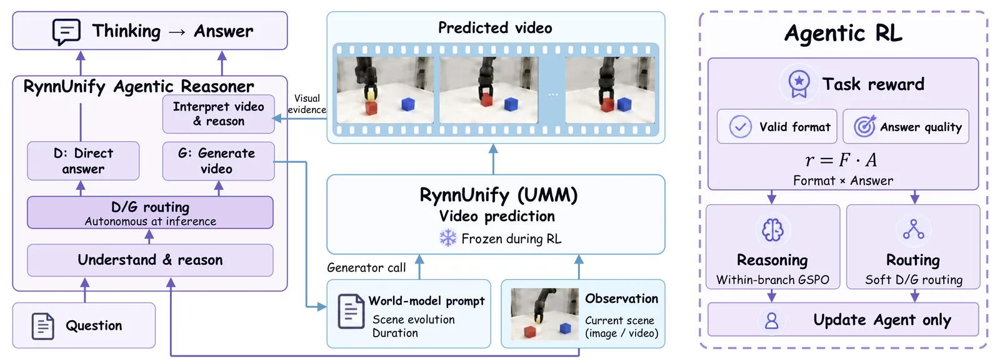
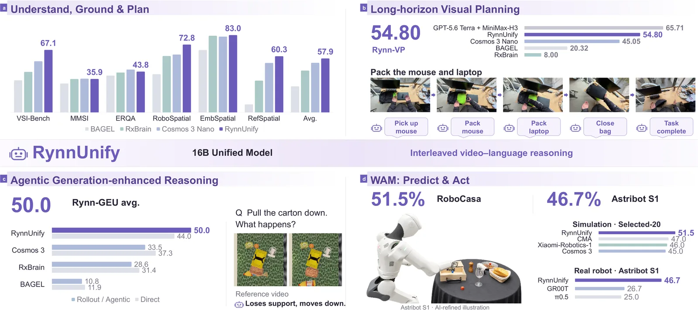

O Desafio do Cérebro Corporificado Unificado
Desenvolver cérebros robóticos gerais exige mais do que simples reconhecimento de objetos; requer que o modelo entenda o mundo físico, antecipe os resultados de interações e traduza intenções de tarefas em ações executáveis. Em operações interdependentes, um robô deve identificar subobjetivos, prever mudanças na cena e determinar como essas mudanças afetam decisões subsequentes. Os Modelos Multimodais Unificados (UMMs) existentes fizeram progressos promissores em modelar conjuntamente compreensão e geração, mas manter essa coordenação em horizontes temporais longos permanece um desafio. Mudanças de cena e erros de previsão se acumulam, e previsões visuais estáticas frequentemente ignoram dinâmicas intermediárias cruciais para o planejamento contínuo.
Arquitetura RynnUnify: MoT e Raciocínio Entrelaçado
Para abordar essas limitações, os autores introduzem o RynnUnify, um modelo de 16 bilhões de parâmetros construído sobre a arquitetura Mixture-of-Transformers (MoT) do Cosmos3. O núcleo do sistema é o raciocínio entrelaçado de vídeo e linguagem, que conecta a compreensão corporificada com a previsão visual para suportar o planejamento de longo prazo guiado pela compreensão. O modelo consiste em dois componentes principais: um raciocinador autoregressivo de 8B, responsável pela compreensão multimodal e geração de linguagem, e um gerador de vídeo de 8B baseado em fluxo retificado, que prevê latentes visuais contínuos. Essas duas ramificações utilizam parâmetros de Transformer separados, mas interagem através de atenção conjunta, permitindo que o gerador atenda às representações produzidas pelo raciocinador.

O Racinocinador e o Gerador de Vídeo
O raciocinador processa observações multimodais e contexto linguístico para suportar compreensão corporificada, ancoragem espacial e planejamento de tarefas. Para o planejamento visual, ele recebe como entrada o objetivo da tarefa, as observações iniciais e atuais, e o histórico de subtarefas anteriores. Com base nisso, ele prevê a próxima subtarefa executável, juntamente com uma descrição detalhada da evolução visual antecipada e uma duração estimada. Essas saídas fornecem ao gerador condições textuais estruturadas que especificam a interação pretendida e sua extensão temporal. Durante o rollout de múltiplos passos, o último frame de cada clip gerado se torna a observação atualizada para o raciocínio subsequente, conectando o planejamento de subtarefas às consequências visuais das previsões anteriores.
Tokenização Visual e Memória de Cena Cruzada
Para a geração de vídeo, os autores utilizam um VAE de vídeo causal com fatores de compressão espacial e temporal de 16 e 4, respectivamente. Os latentes resultantes são patchificados espacialmente em tokens visuais. Uma inovação chave é a memória de cena cruzada, projetada para lidar com planejamentos de longo prazo onde objetos ou regiões da cena saem do campo de visão. O sistema mantém quatro frames de referência: uma observação inicial persistente, dois keyframes selecionados ao longo do histórico anterior e um frame de referência associado ao passo mais recente. Essa seleção preserva tanto a cobertura ampla da cena quanto o contexto recente da tarefa.
Integração da Memória na Geração
Quando a memória de cena é ativada, os tokens visuais dos frames de referência são concatenados antes dos tokens do vídeo principal na sequência de entrada do gerador. Especificamente, a estrutura é composta pelos tokens de contexto textual do raciocinador, seguidos pelos grupos de tokens de memória e, finalmente, pelos tokens do vídeo principal. Durante cada passo de denoising, o gerador processa a memória e os tokens do vídeo principal através de suas camadas de atenção existentes, atendendo às representações textuais do raciocinador. Isso permite que o vídeo principal acesse as referências da cena diretamente, sem a necessidade de introduzir um codificador de memória separado ou módulos adicionais de atenção cruzada, mantendo a eficiência arquitetural.
Extensão Agêntica via Aprendizado por Reforço
Além da arquitetura base, os autores desenvolvem uma extensão agêntica para melhorar a compreensão corporificada através da geração. Eles realizam pós-treinamento de um agente de 8B adicional, derivado do raciocinador do RynnUnify, utilizando aprendizado por reforço com feedback da resposta final. Este agente aprende a escolher dinamicamente entre responder diretamente à pergunta ou invocar o modelo RynnUnify congelado para gerar evidências visuais. Ao gerar vídeos, o agente pode interpretar estados futuros não observáveis e resultados de interações, utilizando essas previsões para refinar seu raciocínio. O treinamento é guiado por recompensas que combinam validade de formato e qualidade da resposta.

Extensão World-Action Model (WAM)
Para trazer as capacidades de compreensão e previsão do mundo para o controle de robôs, o modelo é estendido para um World-Action Model (WAM). Essa extensão traduz a compreensão e as capacidades de previsão em controle de robôs através de planejamento latente e treinamento conjunto de vídeo e ação. O WAM utiliza representações internas do modelo para prever não apenas a aparência da cena, mas também as ações necessárias para alcançar o estado previsto. Isso permite que o modelo traduza intenções de tarefas em comandos de controle diretos, fechando o loop entre percepção, previsão e ação.
Novos Benchmarks: Rynn-VP e Rynn-GEU
Os autores identificam a falta de benchmarks dedicados para avaliar planejamento visual sustentado e a contribuição da previsão de vídeo para o raciocínio de estados futuros. Para preencher essa lacuna, eles introduzem o Rynn-VP e o Rynn-GEU. O Rynn-VP avalia se os planos visuais permanecem consistentes com a tarefa e as operações anteriores ao longo de horizontes longos. O Rynn-GEU foca nas consequências das ações, mudanças físicas e relações espaciais após movimentos ou mudanças de ponto de vista, cujas respostas concernem a estados não diretamente observáveis na entrada. O Rynn-GEU possui configurações diretas, que testam a inferência sem geração explícita, e assistidas por geração, que testam se os vídeos previstos melhoram as respostas.
Resultados em Compreensão Corporificada
Na avaliação de compreensão corporificada fundamental, o RynnUnify alcançou a maior pontuação média entre os UMMs avaliados, atingindo 57,9 em benchmarks normalizados, comparado a 53,2 do Cosmos 3 Nano. Ele liderou em seis dos dez métricas avaliadas, incluindo VSI-Bench e RoboSpatial, onde superou o Cosmos 3 Nano em 12,2 e 10,7 pontos, respectivamente. Para ancoragem de localização, o ShareRobot Affordance melhorou de 28,0 para 41,8, indicando um posicionamento mais preciso de pontos de interação relevantes para a tarefa. O modelo também obteve os melhores resultados em EmbSpatial, RefSpatial-Bench e ShareRobot Trajectory.
Raciocínio Agêntico e Previsão Visual
O desempenho do raciocínio corporificado com geração visual agêntica foi avaliado no Rynn-GEU. O RynnUnify base alcançou a melhor performance de resposta direta entre os UMMs comparados, com uma pontuação média de 44,0. A extensão agêntica, que utiliza aprendizado por reforço, melhorou a média do Rynn-GEU em 6,0 pontos, elevando-a para 50,0, em comparação com o raciocínio direto. Isso demonstra que a capacidade intrínseca de antecipação do modelo é significativamente amplificada quando ele pode gerar e interpretar evidências visuais para estados não observáveis, validando a utilidade do raciocínio entrelaçado.
Planejamento Visual de Longo Prazo
No benchmark Rynn-VP, projetado especificamente para avaliar a consistência do planejamento visual ao longo do tempo, o RynnUnify melhorou a pontuação geral em 9,75 pontos em relação ao Cosmos 3 Nano, passando de 45,05 para 54,80. Esse resultado indica que a arquitetura de memória de cena cruzada e o treinamento de auto-forçamento contribuem efetivamente para manter a coerência visual durante operações sequenciais longas. A capacidade de prever a evolução visual de forma consistente com as subtarefas anteriores é um componente crítico para a navegação e manipulação robótica autônoma complexa.
Controle Robótico e Simulação
A extensão World-Action Model (WAM) foi avaliada em tarefas de manipulação robótica. Em simulação, o modelo alcançou uma taxa de sucesso de 51,5% em 20 tarefas compostas selecionadas do RoboCasa365. Em robôs reais, o modelo obteve uma taxa de sucesso média de 46,7% em três tarefas de manipulação física. Esses resultados estabelecem o RynnUnify como uma base compartilhada para compreensão corporificada, planejamento visual e controle de robôs, demonstrando que a unificação de raciocínio e geração visual pode ser efetivamente traduzida em ações físicas concretas, mesmo em ambientes não estruturados.
Conclusão e Direções Futuras
O RynnUnify representa um passo significativo em direção a um cérebro corporificado unificado, conectando compreensão de cena, previsão de vídeo e ação robótica através de raciocínio entrelaçado. Ao combinar supervisão corporificada com memória de cena cruzada e treinamento de auto-forçamento, o modelo suporta planejamento visual através de operações sucessivas. As extensões agêntica e WAM demonstram a versatilidade da arquitetura para raciocínio sobre estados não observáveis e controle de robôs. Trabalhos futuros focarão em melhorar a fidelidade geométrica, selecionar evidências geradas confiáveis e reduzir o custo computacional para habilitar aplicações robóticas mais eficientes e robustas.

O que fica
- RynnUnify combina um raciocinador autoregressivo de 8B com um gerador de vídeo difusivo de 8B, usando memória de cena cruzada para manter consistência visual em planejamentos de longo prazo.
- O modelo introduz extensões agênticas via RL para decidir dinamicamente quando gerar vídeos para raciocinar sobre estados não observáveis, melhorando a precisão em benchmarks de previsão física.
- A extensão World-Action Model (WAM) traduz a compreensão e previsão em ações robóticas, alcançando 51,5% de sucesso em tarefas compostas do RoboCasa365.
- Limitações incluem distorções geométricas finas nos vídeos gerados e a necessidade de validação mais ampla da execução física em ambientes reais.
Paper original: RynnUnify: Towards Unified Embodied Brain
Comentários
Nenhum comentário ainda. Seja o primeiro.